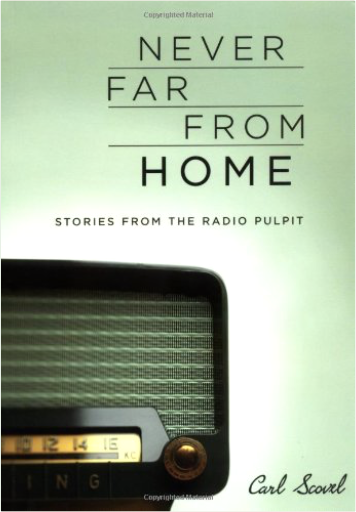
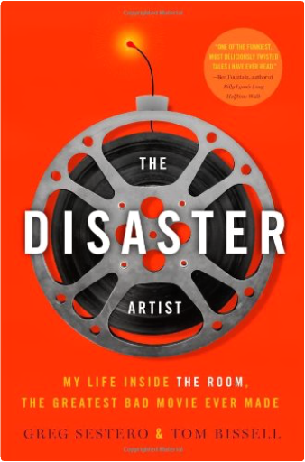
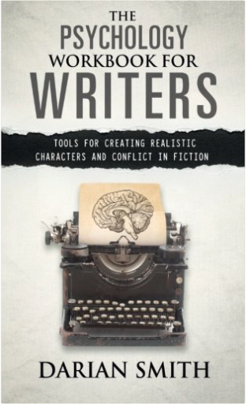
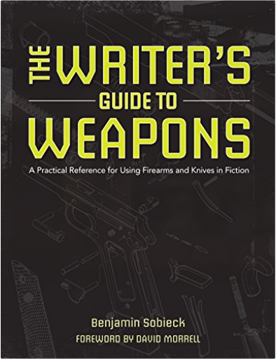

The Speech: A Historic Filibuster on Corporate Greed and the Decline of Our Middle ClassBernie Sanders On Friday, December 10, 2010, Vermont Senator Bernie Sanders walked on to the floor of the United States Senate and began speaking. It turned out to be a very long speech, lasting over eight and a half hours. And it hit a nerve. Millions followed the speech online until the traffic crashed the Senate server. A huge, positive grassroots response tied up the phones in the senator’s offices in Vermont and Washington. President Obama reportedly held an impromptu press conference with former President Clinton to deflect media attention away from Sander' speech. Editorials and news coverage appeared throughout the world.
In his speech, Sanders blasted the agreement that President Obama struck with Republicans, which extended the Bush tax cuts for millionaires and billionaires, lowered estate tax rates for the very, very rich, and set a terrible precedent by establishing a "payroll tax holiday" diverting revenue away from the Social Security Trust Fund, threatening the fund’s very future. But the speech was more than a critique of a particular piece of legislation. It was a dissection of the collapse of the American middle class and a well-researched attack on corporate greed and on public policy which, over the last several decades, has led to a huge growth in millionaires even as the United States has the highest rate of childhood poverty in the industrialized world. It was a plea for a fundamental change in national priorities, for government policy that reflects the needs of working families, and not just the wealthy and their lobbyists.
Finally, Sanders' speech-published here in its entirety with a new introduction by the senator-is a call for action. It is a passionate statement informing us that the only people who will save the middle class of this country is the middle class itself, but only if it is informed, organized, and prepared to take on the enormously powerful special interests dominating Washington. The 5 A.M. Miracle: Dominate Your Day Before BreakfastJeff Sanders The 5 A.M. Miracle is a resource guide for high-achievers. It is for anyone who has a wild passion for life and is in search of a structured system that will hone those passions, clarify their big goals, and produce real, amazing results.
1. Begin Your Day the Right Way
Yes, it's true, I'm a big fan of early mornings. But, more importantly than waking up at an arbitrary time like 5:00 a.m., I'm a strong believer in intentionality. Choosing to wake up with a written plan is something most people just never do, and it's astonishing how much it can change your life once you embrace this single habit.
2. The 5 AM Blueprint: 7 Steps to Extraordinary Productivity
The bulk of the book breaks down my blueprint for unprecedented progress. From healthy habits and productivity strategies, to review systems and professional-grade daily routines, you will find more actionable content than you could possibly imagine.
3. Built-In 30-Day Action Plan
Let's not forget that at the end of the book I summarize the multitude of ideas into an easy-to-follow 30-day plan just so you have a clear plan of action. Lesbian Sex: 101 Lovemaking PositionsJude Schell WOMEN DO IT BETTER
Take your lover on a Joyride. Dip into Priscilla’s Punchbowl, Tongue and Groove, and Toast Her Oven like never before. Discover 101 ways to caress, rub, lick, suck, grind, and slip inside with this groundbreaking collection of lovemaking positions for women who love women.
Exploring the possibilities of every erogenous zone, this lesbian Kama Sutra offers deliciously inventive ideas for women to pleasure themselves and each other, including Gilding the Lily, Peach Gobbler, Hanky Spanky, Girl Wrap, Velvet Rope, and many more. One position will tease and delight her, another will intensify or prolong arousal, and still another will culminate in mind-blowing—and even dual—orgasms. Illustrated throughout with tantalizing, sensual photography, Lesbian Sex brings lovemaking to new heights of daring, intimacy, and ecstasy. Weed: The User's Guide: A 21st Century Handbook for Enjoying MarijuanaDavid Schmader The United States is in the midst of a new Golden Age of legal weed. Recreational marijuana is now legal in four states—Washington, Colorado, Oregon, and Alaska—and Washington, DC, while medical marijuana is legal in 25 states and counting. This definitive, hands-on, and experienced guide to the new world of decriminalized recreational marijuana, written by the lovingly blunt and unfailingly witty David Schmader, will educate and entertain the novice and experienced user alike. Complete with history, ways to enjoy, recipes, safety and legality tips, and medical-use information, this witty guide is perfect for gift giving. You Want to Do What with PHP?Kevin Schroeder A creative look at the fundamentals of PHP programming, this manual shows practical but atypical examples of PHP code. Theories, considerations, and varying options—such as binary protocols, character encoding or scaling PHP applications with messaging—are presented as new approaches to solving problems. Taking into consideration operating system level options, this programming reference goes beyond the basics to offer more advanced and innovative options for building PHP applications.  Never Far from Home: Stories from the Radio PulpitCarl Scovel, Richard Higgins The 100 short essays collected here were originally broadcast between 1979 and 1999 to rapt Sunday morning audiences on WCRB, a classical radio station near Boston. Scovel's five-minute radio sermons taught essential lessons to Bostonians of many faiths. Renowned for his preaching, for many years Scovel was pastor of King's Chapel, the historic Unitarian Universalist church on Tremont Street in Boston. We Pledge Our Hearts: A Treasury of Poems, Quotations And Readings to Celebrate Love And MarriageEdward Searl The journey of love and marriage is filled with many milestones, festivities and celebrations. In We Pledge Our Hearts, Unitarian Universalist minister Edward Searl has collected poetry and prose marking the many stages of love: dating and courtship, marriage and commitment, friendship and companionship. This enduring volume contains selections from ancient and modern sources, from the famous to the obscure, and from many cultures and faith traditions. Some works are previously uncollected.
We Pledge Our Hearts is an invaluable resource for engagements and bridal showers, weddings and commitment ceremonies, and anniversaries and vow renewals. It is perfect for crafting memorable wedding toasts, speeches and vows; adding a personal touch to announcements, invitations and thank-you notes, and finding the ideal inscription for rings.
This timeless tribute to love and commitment is also the ideal gift — a wonderful keepsake for couples of all ages. |  The Disaster Artist: My Life Inside The Room, the Greatest Bad Movie Ever MadeGreg Sestero, Tom Bissell The hilarious and inspiring story of how a mysterious misfit got past every roadblock in the Hollywood system to achieve success on his own terms: a $6 million cinematic catastrophe called The Room.
Nineteen-year-old Greg Sestero met Tommy Wiseau at an acting school in San Francisco. Wiseau’s scenes were rivetingly wrong, yet Sestero, hypnotized by such uninhibited acting, thought, “I have to do a scene with this guy.” That impulse changed both of their lives. Wiseau seemed never to have read the rule book on interpersonal relationships (or the instructions on a bottle of black hair dye), yet he generously offered to put the aspiring actor up in his LA apartment. Sestero’s nascent acting career first sizzled, then fizzled, resulting in Wiseau’s last-second offer to Sestero of costarring with him in The Room, a movie Wiseau wrote and planned to finance, produce, and direct—in the parking lot of a Hollywood equipment-rental shop.
Wiseau spent $6 million of his own money on his film, but despite the efforts of the disbelieving (and frequently fired) crew and embarrassed (and frequently fired) actors, the movie made no sense. Nevertheless Wiseau rented a Hollywood billboard featuring his alarming headshot and staged a red carpet premiere. The Room made $1800 at the box office and closed after two weeks. One reviewer said that watching The Room was like “getting stabbed in the head.”
The Disaster Artist is Greg Sestero’s laugh-out-loud funny account of how Tommy Wiseau defied every law of artistry, business, and friendship to make “the Citizen Kane of bad movies” (Entertainment Weekly), which is now an international phenomenon, with Wiseau himself beloved as an oddball celebrity. Written with award-winning journalist Tom Bissell, The Disaster Artist is an inspiring tour de force that reads like a page-turning novel, an open-hearted portrait of an enigmatic man who will improbably capture your heart. Sweet Blue Flowers, Vol. 1Takako Shimura A genre-defining saga of love and friendship between girls.
Akira Okudaira is starting high school and is ready for exciting new experiences. And on the first day of school, she runs into her best friend from kindergarten at the train station! Now Akira and Fumi have the chance to rekindle their friendship, but life has gotten a lot more complicated since they were kids…
Fumi is glad Akira is back in her life. Even in kindergarten, Akira knew how to stand up for herself, and she was always willing to stand up for Fumi too. But Fumi’s first love recently got married, and Fumi is grappling with a broken heart and the fact that her sweetheart was another woman… Can Akira’s open heart help dispel the gloom Fumi has been caught up in? 5 Centimeters per SecondMakoto Shinkai Love can move at the speed of terminal velocity, but as award-winning director Makoto Shinkai reveals in his latest comic, it can only be shared and embraced by those who refuse to see it stop.
Takaki Tohno quickly befriends Akari Shinohara when she transfers to his school. They grow closer to each other due to similar interests and attitudes; for instance, they both prefer to stay inside during recess due to their constitutions. As a result, they form a strong bond.
Upon ending their school year, Akari moves to Tochigi, due to her parents' jobs. The two keep in contact by writing letters, but eventually begin to drift apart. Secrets of Great Portrait Photography: Photographs of the Famous and InfamousBrian Smith In this sexy, bold, beautiful book, photographer Brian Smith tells the stories behind the photos and lessons learned in 30 years of photographing celebrities and people in all walks of life. A Pulitzer Prize-winning photographer, Smith is the luckiest guy on the planet. He's told Bill Gates exactly what to do for an entire hour, exhibited at the Library of Congress, appeared on The X Factor, dined with the President and 3,000 of his closest friends, shared cupcakes with Anne Hathaway, and gotten drunk with George Clooney . . . all in the service of getting the perfect portrait.
In this juicy guide to shooting professional portraits, Smith shares his insider tips on connecting with people, finding the perfect location, telling a great story through portraiture, getting just the right pose, capturing emotion and gestures, arranging unique group shots, and getting just the right light. Throughout, you'll stay inspired by the breathtaking images included of the famous and infamous-Venus and Serena Williams, Gene Hackman, Cindy Crawford, Donald Trump, Bill Gates, The Bee Gees, Antonio Banderas, Shaquille O'Neal, Anne Hathaway, Ben Stiller, Sylvester Stallone, and others.
You might not be shooting the rich and famous yourself, but after reading Smith's tell-all guide, you'll know how to make every person who makes their way in front of your camera look and feel like a celebrity.  The Psychology Workbook for Writers: Tools for Creating Realistic Characters and Conflict in FictionDarian Smith Writers know that their characters and stories should be multi-layered and believable. Now here’s a simple workbook that uses the same knowledge that gives therapists insight into human behaviour to create fiction that hits the mark. Each chapter outlines an aspect of psychological theory as it can be used for writing and provides two worksheets to translate it into action – one to develop characters, one to develop the story. Darian Smith is a prize winning fiction writer with a degree in psychology, a Diploma of Counselling, and is a member of the New Zealand Association of Counsellors. He combines these two sides of his background to provide simple, easy to follow tools that make use of established psychological theory to help writers develop fully rounded, interesting, realistic characters and inject conflict into their stories. Give your writing the benefit of over a decade of training and experience and discover how to have readers wanting more.  The Writer's Guide to Weapons: A Practical Reference for Using Firearms and Knives in FictionBenjamin Sobieck When it comes to writing weapons, most authors shoot from the hip—and miss. The Writer's Guide to Weapons will help you hit your target every time.
Firearms and knives have starring roles in a wide range of genres—crime, thriller, war, mystery, Western, and more. Unfortunately, many depictions of weapons in novels and film are pure fiction. Knowing the difference between a shotshell and a slug, a pistol and a revolver, or a switchblade and a butterfly knife is essential for imbuing your story with authenticity—and gaining popularity with discerning readers.
Inside you'll find: An in-depth look at the basics of firearms and knives: how they work, why they work, what they look like, and how to depict them accurately in your stories.The biggest weapons myths in fiction, TV, and film.A surefire guide for choosing the correct weapon for your characters, no matter their skill level, strength, or background.A review of major gun and knife laws, weapons safety tips,and common police tactics."The Hit List," showcasing the most popular weapons for spies, detectives, gunslingers, gangsters, military characters, and more.Examples highlighting inaccurate vs. accurate weapons depictions.An insightful foreword by David Morrell, the award-winning creator of Rambo.Equal parts accessible, humorous, and practical, The Writer's Guide to Weapons is the one resource you need to incorporate firearms and knives into your fiction like a seasoned professional. Roller Derby for Beginners: Get Out of the Bleachers and on the TrackFrisky Sour Have you ever wished you could play roller derby? What’s stopping you? Roller Derby for Beginners is a quick start guide for anyone who wants to play roller derby: how to pick a league, choose gear, get started skating, and navigate a new culture. Frisky Sour, former skater and Fresh Meat coach, can't teach you how to skate from a book, but she can help you figure out where to start and how to move forward. Roller derby is harder than it looks, but it’s a little easier with some help along the way. www.rollerderbyforbeginners.com |


 Made with Delicious Library
Made with Delicious Library